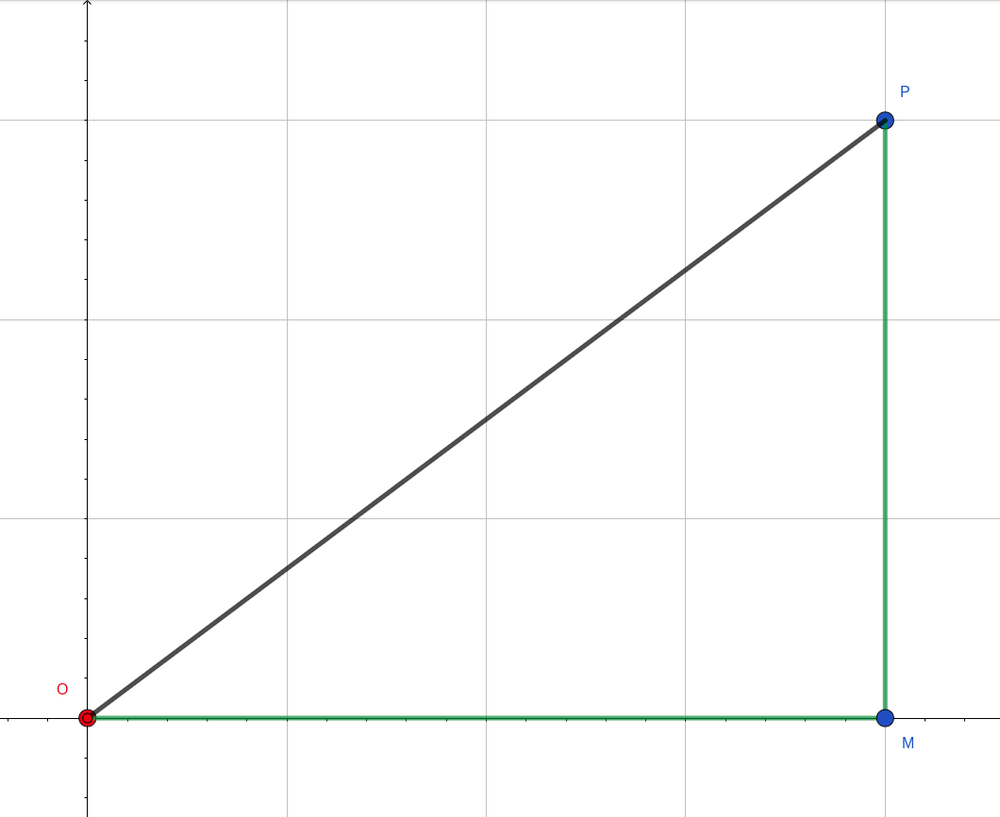

Lesson-4.2
Arguments
Python offers a number of options in terms of the way arguments can be passed to functions.
Positional arguments
All functions that we have seen so far have used positional arguments. Here, the position of an argument in the function call determines the parameter to which it is passed. Let us take the following problem:
!!! question ” ” Write a function that accepts three positive integers x, y and z. Return True if the three integers form the sides of a right triangle with x and y as its legs and z as the hypotenuse, and False otherwise.
Solution
def isRight(x, y, z):
if x ** 2 + y ** 2 == z ** 2:
return True
return False
print(isRight(3, 4, 5)) # 3 is passed to x, 4 is passed to y, 5 is passed to z
print(isRight(5, 4, 3)) # 5 is passed to x, 4 is passed to y, 3 is passed to zThe output is:
True
FalseArguments are passed to the parameters of the function based on the position they occupy in the function call. Look at the comments in the above code to get a clear picture. Positional arguments are also called required arguments, i.e., they cannot be left out. Likewise, adding more arguments than there are parameters will throw an error. When positional arguments are involved, there should be exactly as many arguments in the function call as there are parameters in the function definition. Try to execute the following code and study the error message:
Keyword arguments
Keyword arguments introduce more flexibility while passing arguments. Let us take up the same problem that we saw in the previous section and just modify the function calls:
# The following is just a function call.
# We are not printing anything here.
isRight(x = 3, y = 4, z = 5)The function call in line 3 uses what are known as keyword arguments. In this method, the names of the parameters are explicitly specified and the arguments are assigned to it using the #!py = operator. This is different from positional arguments where the position of the argument in the function call determines the parameter to which it is bound. One advantage of using keyword arguments is that it reduces the possibility of entering the arguments in an incorrect order. For example:
isRight(3, 4, 5) # intended call
isRight(5, 4, 3) # actuall call
isRight(x = 3, y = 4, z = 5) # same as intended call
isRight(z = 5, y = 4, x = 3) # same as intended callKeyword arguments and positional arguments can be combined in a single call:
Now try this out:
The interpreter throws a TypeError with the following message: positional argument follows keyword arguments. That is, in our function call, the positional arguments — #!py 4 and #!py 5 — come after the keyword argument #!py x = 3. Why does the interpreter objects to this? Whenever both positional and keyword arguments are present in a function call, the keyword arguments must always come at the end. This is quite reasonable: positional arguments are extremely sensitive to position, so it is best to have them at the beginning.
How about the following call?
#### Alarm! Wrong code snippet! ####
isRight(3, x = 3, y = 4, z = 5)
#### Alarm! Wrong code snippet! ####The interpreter objects by throwing a TypeError with the following message: isRight() got multiple values for argument x. Objection granted! Another reasonable requirement from the Python interpreter: there must be exactly one argument in the function call for each parameter in the function definition, nothing more, nothing less. This could be a positional argument or a default argument, but not both.
Default arguments
Consider the following scenario. The image that you see here is a map of your neighborhood. The grid lines are roads that can be used by cars. You wish to reach the point \(P\) from \(O\). There are no restrictions if you are on foot. The easiest way is to move along the line \(OP\). This is called the Euclidean distance between points \(O\) and \(P\). If you are in a car, then you are forced to move along the grid lines. The distance you would have to cover in a car is \(OM + MP\). This distance is called the Manhattan distance between points \(O\) and \(P\).

Let us say that a self-driving car startup operating in your neighborhood uses both these metrics while computing distances. Assume that its code base invokes the Euclidean distance 10 times and the Manhattan distance 1000 times. Since these metrics are used repeatedly, it is a good idea to represent them as functions in the code base:
# Assume that O is the origin
# All distances are computed from the origin
def euclidean(x, y):
return pow(x ** 2 + y ** 2, 0.5)
def manhattan(x, y):
return abs(x) + abs(y)While the above code is fine, it ignores the fact that the Manhattan distance is being used hundred times more frequently compared to the Euclidean distance. Default arguments can come in handy in such situations:
def distance(x, y, metric = 'manhattan'):
if metric == 'manhattan':
return abs(x) + abs(y)
elif metric == 'euclidean':
return pow(x ** 2 + y ** 2, 0.5)The parameter metric has #!py 'manhattan' as the default value. Let us try calling the function without passing any argument to the metric parameter:
This gives 7 as the output. Since no value was provided in the function call, the default value of #!py 'manhattan' was assigned to the metric parameter. In the code base, wherever the Manhattan distance is invoked, we can just replace it with the function call distance(x, y).
The following points are important to keep in mind:
- Parameters that are assigned a value in the function definition are called default parameters.
- Default parameters always come at the end of the parameter list in a function definition.
- The argument corresponding to a default parameter is optional in a function call.
- An argument corresponding to a default parameter can be passed as a positional argument or as a keyword argument.
Let us illustrate some of these points:
#### Alarm! Wrong code snippet! ####
def distance(metric = 'manhattan', x, y):
if metric == 'manhattan':
return abs(x) + abs(y)
elif metric == 'euclidean':
return pow(x ** 2 + y ** 2, 0.5)
#### Alarm! Wrong code snippet! ####The above code throws a SyntaxError with the following message: non-default argument follows default argument. In the function definition, the default parameter must always come at the end of the list of parameters. Now, for different ways of passing arguments in the presence of default parameters:
All three function calls are equivalent. The first one uses default value of metric. The second call explicitly passes 'manhattan' as the metric using a positional argument. The last call explicitly passes 'manhattan' as a keyword argument.
Call by value
Consider the following code:
def double(x):
x = x * 2
return x
a = 4
print(f'before function call, a = {a}')
double(a)
print(f'after function call, a = {a}')The output is:
before function call, a = 4
after function call, a = 4We see that the value of a is not disturbed by the function in any way. When the function call double(a) is invoked, the value in a is assigned to the parameter x in the function. Arguments are passed by assignment in Python, which means that something like #!py x = a happens when double(a) is invoked. This kind of a function call where the value in a variable is passed as argument to the function is called call by value.
Consider the following code:
We are using the same name for both the parameter of the function square and the argument passed to it. This is a bad practice. It is always preferable to differentiate the names of the parameters from the names of the arguments that are passed in the function call. This avoids confusion and makes code more readable. At this stage, you might be wondering how the variable x inside the function is related to the variable x outside it. This issue will be taken up in the next lesson on scopes. The above code could be rewritten as follows: